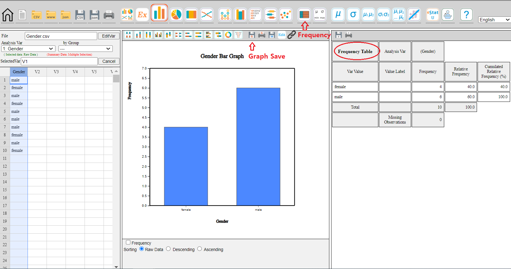
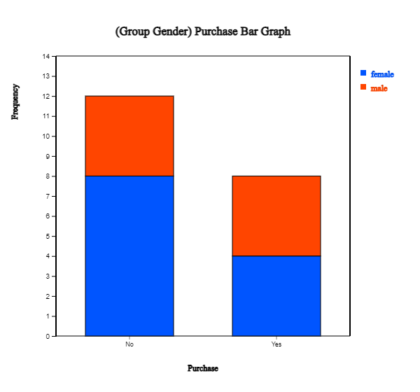
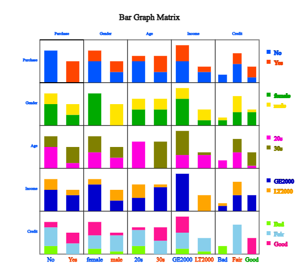

• Visualization of qualitative data in Section 2.1.
If data is categorical,
bar graph, pie chart, band graph, and line graph are used to visualize data. 『eStat』 can visualize the raw data
of a categorical variable. If a frequency table summarizes the raw data of a categorical variable,
『eStat』 can plot similar graphs using the frequency table. Categorical data by a group variable is also
discussed. If there are two or more qualitative variables, a bar graph matrix is used
to visualize data. We can visualize text data using a word cloud.
• Visualization of quantitative data in Section 2.2.
If there is a single quantitative variable, dot graph, histogram,
stem and leaf plot are used to visualize data. If there are two or more quantitative variables, scatterplot and scatterplot matrix are used
to visualize data. If a quantitative variable is observed over time, line graph or time series plot can be used to visualize data.
2.1 Visualization of qualitative data
Data on gender for students in a classroom who are either male or female are referred to as qualitative and categorical data.
Data on marital status for company employees who are either single or married are also qualitative and categorical.
Bar graph, pie chart, band graph, and line graph are used to visualize the categorical data for an exploratory data analysis.
A bar graph is a graph that presents qualitative data with rectangular bars. Each bar height is proportional to the frequency of the bar category. Therefore, the frequencies of all categories in a categorical variable
can be easily compared by watching the bars' heights. We usually put some space between
the rectangular bars to emphasize that they represent the distinct categories of a variable.
The bar chart's rectangular bars can be plotted vertically or horizontally. One axis of the chart shows
all categories of a variable, and the other axis represents the frequencies of each category. If the frequency of
each category is represented as the vertical height of a bar drawn up and down in the bar graph,
it is called a vertical bar graph. A bar can also be drawn left and right, and its length is proportional to the frequency of each category. It is called a horizontal bar graph.
A pie chart is a graph that shows frequencies of all categories of the analysis variable by dividing a pie (circle)
into pieces with different colors depending on the angle, which is proportional to the frequency of each category.
We usually draw the largest piece in a clockwise order starting from 12 o'clock so that the ratio can be compared well.
A doughnut chart that removes a center circle from the pie chart can also be used.
A band graph is similar to the ratio bar graph that shows frequencies of all categories of the analysis variable
by dividing a rectangle into square pieces with different colors, which are proportional to frequencies of all categories.
It is also similar to the pie chart. The square pieces can be sorted in descending order by the frequencies of
each category, but 『eStat』 draws the square pieces in the order of category values of a categorical variable.
A line graph shows frequencies (or values) of all categories of an analysis variable in a two-dimensional graph.
The X-axis shows the names of categories, and the Y-axis represents the scale of frequencies (or values) of all categories.
Each pair of the values, the category name and its frequency, is marked as a point in a two-dimensional coordinate plane,
and two adjacent points are connected with a line. The line graph may be similar to the vertical bar graph,
which connects only the top centers of each bar. The line graph is usually used to visualize time-dependent data
to watch its trend over time. For example, the yearly amount of exports in a country can be visualized using the line graph.
Gender is a typical categorical variable with two categories, 'male' and 'female.'
Suppose you investigated 10 students based on their gender in a class and reported the result as follows.
This data is called the raw data of the gender variable.
For statistical packages, the raw data are usually arranged in columns, as shown in Table 2.1.1.
Table 2.1.1 Raw data of the gender in a class
Gender
male
female
male
female
male
male
male
female
male
female
Numeric coded values such as 1 for male and 2 for female can be used for convenience because some packages do not
allow characters on data values. 『eStat』 system allows the raw data of both with and without coding.
If you counted the number of ‘male’ and ‘female’ students in the above raw data, 6 males and 4 females,
the result of frequencies is usually reported, as shown in Table 2.1.2.
Table 2.1.2 Frequency data of the gender in a class
Gender
Students
Male
6
Female
4
This data is called the frequency data of the gender variable. If the raw data of a categorical variable are summarized
by frequency data, 『eStat』 can plot the graphs using both raw and frequency data.
If the number of data increases, counting the number of cases in each category from the raw data
of a categorical variable to make the frequency data is not easy. One of the essential
functions of a statistical package is to organize the raw data into frequency data
by counting the number of cases in each category. Since generating the frequency data from the massive raw data
is so difficult for non-expert people, most governmental institutions usually provide the census statistics
to the public in the form of frequency data such as population by gender or
population by region. We can download these frequency data from the governmental web pages
as an Excel file.
An Excel file can be saved as a text file in CSV (comma-separated value) format which can be loaded by 『eStat』 for data processing and analysis (refer Appendix A).
This section discusses the visualization of the raw data of a categorical variable without a group and with a group
variable. Section 2.1.2 discusses the visualization of frequency data without a group and with a group variable,
which can be found in textbooks of elementary, middle school, high school, and in governmental publications.
Section 2.1.3 discusses the visualization of several categorical variables. Text data is a special case of qualitative data.
Section 2.1.4 discusses the visualization of text data using word cloud.
2.1.1 Visualization of raw data of a categorical variable
Visualization of raw data of a single variable
Consider the following example to visualize the raw data of the gender variable in Table 2.1.1 using 『eStat』.
Example 2.1.1(Visualization of raw data on gender variable)
Enter the raw data of Table 2.1.1 to the sheet of 『eStat』 and save it as a file in CSV format.
Then, visualize the data with a bar graph, pie chart, band graph, and line graph using 『eStat』.
Analyze the graphs and prepare a report using MS Word (or any word processor you prefer).
Answer
Enter the data of Table 2.1.1 to the sheet of 『eStat』 as in <Figure 2.1.1>
and enter a variable name of V1 as ‘Gender’ using [Edit Var] button above the sheet.
Save this file as Gender.csv by clicking [csv Save] button above the sheet.
<Figure 2.1.1> Data input in 『eStat』
Click the Gender variable name, then the selected variable (V1 is the name of the 1st variable)
will appear in the 'Selected Var' box above the sheet. You can also select
the variable ‘1: Gender’ using the 'Analysis Var' combo box.
above the sheet as shown in <Figure 2.1.1>.
When a variable is selected, a vertical bar graph, the default graph of 『eStat』, is drawn
as in <Figure 2.1.2>. The height of each bar (rectangle) is proportional to the frequency
of each category in the gender variable. Therefore the frequencies of both the male and
the female categories can be easily compared by looking the heights of the bars.
The bar graph shows that the number of male students is larger than that of female students.
A vertical bar graph that draws bars up and down, as in <Figure 2.1.2> is widely used,
but a horizontal bar graph that draws bars from left to right is often used if there are many categories.
By clicking on the horizontal bar graph icon above the Graph window, a horizontal bar graph,
as in <Figure 2.1.3> will appear in the Graph window.
The frequency of each bar is displayed by checking the ‘Frequency’ box below the graph.
<Figure 2.1.2> Vertical bar graph of the number of male and female students.
<Figure 2.1.3> Horizontal bar graph of the number of male and female students.
By clicking the ‘Graph Save’ icon
above the Graph window, the current graph of the Graph window will be saved with a file name
‘eStatGraph.png’ after showing on the main screen for a short time. If you click the 'Frequency Table'
button on the main menu icon, the frequency table corresponding to the bar graph appears
on the right-hand side of the main screen.

<Figure 2.1.4> Graph is saved by clicking the ‘Graph Save’ icon
The location of the saved graph file is the download folder specified in your computer system.
If you save another graph, eStatGraph(1).png will be created in the download folder.
The number in parentheses of the file name will be increased whenever you save a new graph.
You can copy this graph file from the download folder and paste it into MS Word
as in <Figure 2.1.5>. You can copy the frequency table of the main screen and paste it
into Word. You can also write comments about the graph if necessary.
<Figure 2.1.5> Copied graph file of 『eStat』 to MS Word
Click on the pie chart icon
to display a pie chart as in <Figure 2.1.6>
and click on the doughnut graph icon
to display a doughnut graph, which is a pie chart, but a small middle circle is cut off.
The pie chart shows frequencies of the number of male and female students by dividing a pie (circle) into pieces
with two colors depending on angles that are proportional to each category's frequencies.
<Figure 2.1.6> Pie chart of the number of male and female students.
Click on the band graph icon
to display a band graph as in <Figure 2.1.7>. A band graph is a variant of the pie chart
that divides a rectangle into square pieces proportional to each category's frequencies.
It is named after a rectangular shape with multiple square pieces which look like a band.
<Figure 2.1.7> Band graph of the number of male and female students.
We can draw a bar graph after counting the frequencies of all variable categories.
If there is another categorical variable, called a group variable, we can count the frequencies
of all categories of
the first categorical variable for each category of the second (group) categorical variable.
the first categorical variable can be counted for each category of the second (group) categorical variable.
For example, we can count the number of single and married employees in the
male and female categories. We can draw two bar graphs of the marital status for both the male
and the female categories so that both graphs have the same scale of the Y-axis to compare easily the frequencies
of the male category with the frequencies of the female category. This graph is called
a separate bar graph
of the marital status by gender variable. In this case, the gender variable is called a group variable,
and the marital status is called an analysis variable.
If a variable is analyzed by using a group variable, there are many variants of bar graphs
which visually compares all categories of the group variable. A stacked bar graph
divides a single bar, which represents the frequency of a category of the analysis variable,
into pieces with different colors, which are proportional to the frequency of each category
of the group variable. A ratio bar graph
draws that all bars (rectangles) of each category of the analysis variable have the same height
and divides each bar into pieces with different colors, which are proportional to the frequencies
of each category of the group variable. A side-by-side bar graph
is that in each category of the analysis variable rectangular bars of all categories of
the group variable are drawn side-by-side ways for comparison using the same scale.
If there are only two categories of the group variable, a two-sided bar graph (or a bi-lateral bar graph)
can be used, which draws bars of one category of the group variable
in one side and bars of the other category of the group variable in the opposite direction.
The direction can be either the left and right side of the Y-axis or the above and below of the X-axis.
Visualization of raw data with a group variable
Consider an example to visualize one categorical variable by using the other group variable.
Example 2.1.2(Customer survey data of a computer store)
Twenty customers who visited a computer store were surveyed, and the results of the survey
on the gender, age, monthly income, credit status, and whether to purchase were summarized
as in [Table 2.1.3].
Table 2.1.3 Survey on twenty customers of a computer store
id
Gender
Age
Income
Credit
Purchase
1
male
20s
LT2000
Fair
Yes
2
female
30s
GE2000
Good
No
3
female
20s
GE2000
Fair
No
4
female
20s
GE2000
Fair
Yes
5
female
20s
LT2000
Bad
No
6
female
30s
GE2000
Fair
No
7
female
30s
GE2000
Good
Yes
8
male
20s
LT2000
Fair
No
9
female
20s
GE2000
Good
No
10
male
30s
GE2000
Fair
Yes
11
female
30s
GE2000
Good
Yes
12
female
20s
LT2000
Fair
No
13
male
30s
GE2000
Fair
No
14
male
30s
LT2000
Fair
Yes
15
female
30s
GE2000
Good
Yes
16
female
30s
GE2000
Fair
No
17
female
20s
GE2000
Bad
No
18
male
20s
GE2000
Bad
No
19
male
30s
GE2000
Good
Yes
20
male
20s
LT2000
Fair
No
Enter the data of Table 2.1.3 to the sheet of 『eStat』 and save it as a file in CSV format.
Using this data, draw bar graph variants on the purchase variable (called 'analysis variable')
by the gender variable (called a 'group variable') with 『eStat』.
Find a frequency table corresponding to these graphs.
Answer
We entered the data of Table 2.1.3 to the sheet of 『eStat』 as in <Figure 2.1.8> and
assigned variable names of V1, V2, V3, V4, V6 as 'id', ‘Gender’, 'Age', 'income', 'Credit', 'Purchase'
respectively using [Edit Var] button above the sheet. The data is saved in 『eStat』 system at
Ex -> /DataScience/PurchaseByCredit20.csv.
<Figure 2.1.8> Data input in 『eStat』
Click the first variable name 'Purchase' and then the second variable name 'Gender'.
Selected variables will appear in the 'Selected Var' box above the sheet.
You can select the variable ‘6: Purchase’ using the combo box of the 'Analysis Var'
and the variable ‘2: Gender’ using the combo box of the 'By Group' above
the sheet.
When variables are selected, a vertical bar graph with a group, the default graph of 『eStat』, is drawn
as in <Figure 2.1.9>. The bar graphs for males and females are drawn separately, called
a 'Separate bar graph'. By clicking the ‘Frequency’ box below the graph,
the frequency of each bar will be displayed as in <Figure 2.1.10>.
<Figure 2.1.9> Vertical separate bar graph on Purchase by male and female group.
<Figure 2.1.10> Two-dimensional frequency table on Purchase by male and female group.
The sub-icon menu above of the graph shows several variants of bar graph when there is a group
variable. They are vertical 'Separate', 'Stacked' as in <Figure 2.1.11>, 'Ratio' as in <Figure 2.1.12>,
'Side-by-side' as in <Figure 2.1.13>, 'Two-sided' as in <Figure 2.1.14> and horizontal bar graphs.

<Figure 2.1.11> Vertical stacked bar graph on Purchase by male and female group.
<Figure 2.1.12> Vertical ratio bar graph on Purchase by male and female group.
<Figure 2.1.13> Vertical side-by-side bar graph on Purchase by male and female group.
<Figure 2.1.14> Vertical bi-lateral bar graph on Purchase by male and female group.
Practice 2.1.1(Preference of Mathematics by Gender)
In an elementary school, the gender (1: male, 2: female) and math preference (1: good, 2: ordinary, 3: no) of students were surveyed and saved at the following location of 『eStat』 system.
[Ex] ⇨ DataScience ⇨ MathPreferenceByGender.csv.
Draw a bar graph, a pie chart and a band graph of the math preference by gender.
Visualization of raw data of several varaibles
If there are two or more qualitative variables, a bar graph matrix is used to visualize data.
If there are \(m\) number of variables, \(m × m\) matrix of bar graphs is visualized. In each column variable,
bar graph is visualized based on the frequencies of each value of the column variable by using the row variable
as a group variable. The bar graph matrix is useful for deciding which variable is useful for classification
analysis.
Example 2.1.3 (Bar graph matrix)
Draw a bar graph matrix using the five variables in Table 2.1.3, gender, age, income, credit
and purchase.
Answer
After you load the data file of Table 2.1.3, /DataScience/PurchaseByCredit20.csv,
click the bar graph matrix icon
.
Click 'Purchase' as 'Group' variable and select 'Gender', 'Age', 'Income', 'Credit'
as 'Analysis Var'. Then, the bar graph matrix, as in <Figure 2.1.15>, will appear
in the graph window.

<Figure 2.1.15> Bar graph matrix using the data in Table 2.1.3.
You can practice a 'Bar graph matrix' using the module in 『eStatU』, 'Ch 2 Bar graph Matrix' as
following example.
[Bar Graph Matrix]
2.1.2 Visualization of frequency data of a categorical variable
Visualization of frequency data of a single categorical variable
If you counted the number of ‘male’ and ‘female’ students in the raw data, as in Table 2.1.1,
the frequency result is reported in Table 2.1.4.
Table 2.1.4 Frequency data of the gender in a class
Gender
Frequency
Male
6
Female
4
『eStat』 can also plot the graphs using this frequency data of the gender variable
as the following example.
Example 2.1.4(Frequency data of gender) Enter the frequency data of Table 2.1.4 to the sheet of 『eStat』 and save it as a file
in CSV format. Using this data, draw a bar graph, a pie chart and a band graph with 『eStat』.
Analyze the graphs.
Answer
Enter the data of Table 2.1.4 to the sheet of 『eStat』 as in <Figure 2.1.16> and
enter a variable name of V1 as ‘Gender’ and of V2 as ‘Frequency’ using [Edit Var] button
above the sheet.
<Figure 2.1.16> Data input of frequency data in Table 2.1.4
Click the first variable name 'Gender', and then the second variable name 'Frequency'.
Selected variables will appear in the 'Selected Var' box above the sheet.
You can select the variable ‘1: Gender’ using the combo box of the 'Analysis Var'
and the variable ‘2: Frequency’ using the combo box of the 'By Group'
above the sheet as shown in <Figure 2.1.16>.
When variables are selected, a vertical bar graph, which is the default graph of 『eStat』
is drawn as in <Figure 2.1.17>. The height of each bar (rectangle) is proportional
to the frequency of each category in the gender variable. Therefore, the frequencies
of both the male and the female categories can be easily compared by watching the heights of the bars.
The bar graph shows that the number of male students is larger than that of female students.
<Figure 2.1.17> Vertical bar graph using the frequency data in Table 2.1.4
A vertical bar graph that draws bars up and down, as in <Figure 2.1.17> is widely used,
but a horizontal bar graph, that draws bars from left to right is often used
if there are many categories. By clicking on the horizontal bar graph icon
above the Graph window, a horizontal bar graph,
as in <Figure 2.1.18> will appear in the Graph window.
By checking the
'Frequency’ box below the graph, the frequency of each bar, will be displayed.
<Figure 2.1.18> Horizontal bar graph using the frequency data in Table 2.1.4
Click on the pie chart icon
to display a pie chart. Click on the band graph icon
to display a band graph.
Visualization of frequency table of several groups
Many governmental institutions such as the UN, OECD, and EU release their statistics to the public
as frequency data, which can be downloaded as an Excel file or a
text file in CSV format. The following example shows how to download a file from the OECD
and how to draw graphs using this file.
Example 2.1.5 (Life Expectancy at Birth : Source OECD) From the home page of the OECD, https://www.oecd.org, download a data file of the life expectancy at birth.
Copy the columns of the country name and 2017 data at the last column to 『eStat』 system and save it as a file in CSV format.
Using this data, draw a vertical bar graph and a horizontal bar graph in descending order of the life expectancy. Analyze the graphs.
Answer
The main screen of the OECD website, https://www.oecd.org, as of September 2024
is in <Figure 2.1.19>.
<Figure 2.1.19> OECD home page
Select the menu at the top right-hand corner (three lines) and select Data > Key Indicators,
then select Health in Policy areas of Filters. If you choose
Life expectancy at birth, you can see the graph of Life expectancy at birth.
You can find Access now button below the graph at the section on
Access the source dataset in Data Explorer. If you click on ‘Access now’ button,
the OECD Data Explorer screen, as in <Figure 2.1.20> will appear.
<Figure 2.1.20> OECD Data Explorer screen for life expectancy at birth
If you click on Download button, and then select Table in Excel,
an Excel file of Life expectancy, OECD.ELS.HD,DSD_HEALTH_STAT@DF_LE,,filtered,2024-09-13 13-50-12.xlsx,
is downloaded. If you open the Excel file, it looks like, as in <Figure 2.1.21>.
<Figure 2.1.21> Excel file of OECD life expectancy at birth
It includes Life expectations at birth for the total population, male and female population
from the year 2015 to 2023. Since some of the data are missing in 2022 and 2023, let us
draw graphs using only the data in 2021 for the total, female, and male population.
The downloaded file is modified after removing missing data in U.K.
as in <Figure 2.1.22> to make a file in CSV format and it is saved
with a file name 'OECD_life_expectancy_at_birth_2021.csv'
<Figure 2.1.22> Modified OECD file for data processing
If you load the file, OECD_life_expectancy_at_birth_2021.csv, to 『eStat』 system
and select 'Analysis Var' as 'Country' and select 'by Group' as 'Total', a vertical
bar graph will appear in the Graph window. To compare the life expectancy by country,
select an option in Sorting as 'Descending' below the graph. A vertical
bar graph sorted in descending order of life expectancy appears in <Figure 2.1.23>.
<Figure 2.1.23> Bar graph sorted in descending order of life expectancy
You can easily check that Japan has the highest life expectancy and Latvia has the
lowest. If you click the variable names 'Country', ‘Female’ and ‘Male’
after erasing the current variable selection and clicking the horizontal 'Side-by-side' bar graph button,
a bar graph, as in <Figure 2.1.24> appears in the Graph window. You can check
the difference in life expectancy between female and male by country. Latvia has
the largest discrepancy. If the characters of the country name are too small to see,
you can enlarge the screen by holding the [Ctrl] key and rolling up the wheel mouse.
You can click the horizontal bar graph icon above the Graph window
to draw a horizontal bar graph as in <Figure 2.1.24>.
<Figure 2.1.24> Horizontal bar graph for life expectancy by country
Practice 2.1.2(Alcohol Expenditure: OECD)
Draw a bar graph using the following data in 『eStat』 system and analyze the graph.
Example 2.1.6 (Male and Female Population by Age Groups)
In 2015, the male and female populations by age groups in Korea are shown in Table 2.1.5.
Using this data, draw a vertical bar graph by age group and find appropriate graphs
to quickly analyze this data's characteristics.
Table 2.1.5 male and female populations by age group in Korea
(KOSTAT Census 2015, unit 10,000 persons)
Age Interval
2015 Male
2015 Female
00 - 04
115
109
05 - 09
116
109
10 - 14
126
116
15 - 19
166
151
20 - 24
181
158
25 - 29
158
145
30 - 34
158
176
35 - 39
193
186
40 - 44
214
207
45 - 49
215
212
50 - 54
209
205
55 - 59
192
194
60 - 64
134
141
65 - 69
102
110
70 - 74
79
97
75 - 79
55
80
80 - 84
28
54
over 85
13
39
Answer
The data of Table 2.1.6 can be loaded from 『eStat』 using the following address.
[Ex] ⇨ DataScience ⇨ PopulationByGender.csv.
Click on the variable name of the first variable, 'AgeInterval' followed by the second variable
‘2015_Male’ and the third variable ‘2015_Female'.
You may select the ’AgeInterval’ variable from the 'Analysis Var' box and ‘2015_Male' and
’2015_Female’ variables sequentially from the 'By Group box. When these variables are selected,
a separate vertical bar graph
which separates the male and
female populations with the same scale of the Y-axis will appear in the Graph window.
Among ten possible bar graphs, a side-by-side bar graph
would be useful because it shows the comparison of the number of male
and female populations in each age interval. Or ratio bar graph
which shows directly the proportions of male and female populations in each age interval
can also be useful. In each of the graphs, you can easily see that the female population is getting larger than
the male population after the age interval of 50s and more.
An overall distribution of the male and female populations by age group can be observed by using
a two-sided (bi-lateral) horizontal bar graph
as in <Figure 2.1.25> usually called a population pyramid. Currently,
Korea has an age-specific population structure that looks like a jar. In other words,
the population in age intervals of 40 to 50 is higher than the population in age intervals of 30
or less, which is gradually decreasing. It would cause many problems in the future society
such as a population decrease, a medicare budget increase, etc.
<Figure 2.1.25> Population pyramid (Bi-lateral graph of the population by age group and by gender
A line graph
as in <Figure 2.1.26> can also be used to see this kind of pattern.
<Figure 2.1.26> Line graph of population by age and by gender
Practice 2.1.4(Death rates in Virginia)
For each of five age groups (50–54, 55–59, 60–64, 65–69, 70–74), death rates are measured per 1000 population per year
in Virginia. They are cross-classified by population group, such as Rural/Male, Rural/Female, Urban/Male and
Urban/Female. These data are saved at the following location of 『eStat』system.
[Ex] ⇨ DataScience ⇨ VADeaths.csv
Draw appropriate graphs to analyze the characteristics of the data.
In general, if there are many groups (columns) on the frequency data, you can compare the difference
between groups for each category of the analysis variable using different kinds of graphs.
If there are many groups, it is recommended that you draw several kinds of graphs because each graph
can show you different data characteristics.
If data are observed over time, it is called a time series, and a line graph is usually used
to observe a trend over time. The X-axis includes values of a time variable, which are spaced equally,
and the Y-axis represents a scale of all time series data. Each data pair, time and value, is marked
as a point in a two-dimensional coordinate plane, and two adjacent points are connected with a line.
Practice 2.1.5(Average Temperatures by Season in Korea)
Average temperatures of each season were observed from 1973 to 2016 in Korea,
and data are saved at the following location of 『eStat』 system.
Draw a line graph of the temperatures by season and observe their characteristics.
2.1.3 Visualization of text data
A word cloud is a visual representation of text data. It visualizes the word frequency
in a given text as a weighted list. The importance of each word is shown in the word cloud
by font size or color. Bigger term means greater weight.
The word cloud is useful for quickly perceiving the most prominent words to determine their
relative prominence. Recently, it has been used to visualize the topical content of political speeches.
It can be used as a website navigation aid to determine hyperlinks to items associated with the words
in social software. The keyword in the cloud is sometimes used as a search engine marketing term
that refers to a group of keywords relevant to a specific website.
Many algorithms generate a word cloud. 『eStat』 adopted the algorithm of d3 open software.
There are evolving approaches to constructing a word cloud by applying word co-occurrences in documents.
Example 2.1.9 (Word Cloud) Generate a word cloud on the following description on data science and analyze important words.
The development of these technologies has created massive data, called ‘Big Data’,
that was unimaginable in the past. Typical examples of big data include data from Google's
search records, social media messages by mobile phones, weblogs by internet connections,
and telephone records of global telecom companies. The big data are expected to grow
and increase exponentially in the future, and hyper-forecasting is also expected to be possible.
The success or failure of each individual, group, company and even country depend on
how to utilize big data efficiently.
The analysis of big data that emerged this century is so enormous and diverse
in the amount of data that it can not be fully utilized just by traditional statistical approaches.
To analyze and utilize big data, we must apply theories of statistics, computer science,
mathematics, management. or related disciplines simultaneously. Data science is a new area
of study in which statistics, mathematics, computer science and other disciplines are fused
to analyze and utilize big data, which emerged this century.
Answer
Click the eStaU icon and click [Word Cloud] in the menu, or you can use the QR code below.
Copy the sample text to [Data Input] text area and click [Execute] button. Then, a word cloud on data science is drawn.
'Data' is the highest frequency word in the word cloud,‘big’ is the next in this word cloud.
[Word Cloud]
Practice 2.1.6(Inaugural Address of US President: Jonh F. Kennedy))
Generate a word cloud on the following part of the inaugural address by US President John F. Kennedy and analyze important words.
In the long history of the world, only a few generations have been granted the role of defending
freedom in its hour of maximum danger. I do not shrink from this responsibility--I welcome it.
I do not believe that any of us would exchange places with any other people or any other generation.
The energy, the faith, and the devotion which we bring to this endeavor will light our country and all who serve it--and the glow from that fire can truly light the world.
And so, my fellow Americans: ask not what your country can do for you--ask what you can do for your country.
My fellow citizens of the world: ask not what America will do for you, but what together we can do for the freedom of man.
2.2 Visualization of quantitative data
Visualizing the quantitative data is a basic statistical analysis step,
an exploratory data analysis before you get into some statistical analysis.
Based on this exploratory analysis, you can apply an estimation for a single population parameter
in section 4.4, a testing hypothesis for two populations in section 5.2, and
a testing hypothesis for several populations in section 5.3. We can also apply a regression analysis
for two quantitative variables in section 5.4.
2.2.1 Visualization of a single quantitative variable
In the case of the quantitative data, raw data are directly used to visualize the data. Visualization of the quantitative data is discussed by separating cases of the data without group and with group.
In this section, we introduce visualization of the quantitative data by separating cases of the data
without group and with group.
Visualization of a single quantitative variable without a group variable
Data such as height and weight, whose possible values are real numbers, are called quantitative data.
To visualize the quantitative data of a variable, dot graph, histogram, stem and leaf plot are used.
To visualize the quantitative data of two variables, a scatter plot that utilizes a two-dimensional
coordinates is used.
A dot graph is used to visualize the quantitative data with fewer data counts.
To draw the dot graph, we first draw the horizontal line and set its scale so that all data can be
displayed on the horizontal line by considering the minimum and maximum of the data,
then mark each data value in the dot corresponding to its scale. The dot graph makes it easy
to see distribution patterns and anomalies in the data.
If there are too many observations of the quantitative data and too many
possible data values, the dot graph may not have enough space to show all the data. In such cases,
we divide all possible data values into several intervals, and count the number of data
belonging to each interval. Using the frequencies of each interval, we draw a histogram
similar to the bar graph with no spacing between bars.
You might ask, 'How many intervals do I need to have?' There is no exact answer for
the number of intervals, but 5 ± 2 number of intervals is usually used when there is
a small number of data. A square root of the number of data is also often used as
the number of intervals, but if the number of intervals is too many, it is not easy to analyze
the data sometimes. As far as the number of intervals is concerned, it depends on the analyst's judgment.
A stem and leaf plot is a variation of the histogram recently used to visualize the quantitative data.
The stem and leaf plot can quickily tell the range of observations, shape of distribution, and concentration.
The name shows the data in the form of stems and leaves by considering the digits of data values:
For each number in the data, we first investigate where it belongs to a stem and then
write down the last digit of the number as a leaf corresponding to the stem. After investigating
all numbers in the data, we rearrange the values of the leaves on each stem in ascending order.
The stem and leaf plot has been commonly used in recent years as both an interval-specific
frequency distribution and a histogram for the quantitative data.
A scatter plot is to visualize data of two quantitative variables using two-dimensional coordinates.
The scatter plot can be considered as an extension of the dot graph for the single quantitative variable.
Each pair of the data of two quantitative variables is expressed as a dot with one value on the X-axis
and the other value on the Y-axis in the XY plane. We can observe the relationship between
two quantitative variables efficiently using the scatter plot.
If the quantitative data are the sample data from a population, visualization of this sample data
is used as a basic exploratory data analysis for estimation and testing hypothesis.
Example 2.2.1 (Otter Length)
The following data show the lengths of 30 otters. Use 『eStat』 to draw a dot graph, a histogram, a stem and leaf plot. (unit cm)
63.2 65.3 67.6 68.7 69.7 60.7 72.4 75.2 64.4 76.5
68.3 69.3 70.2 71.3 74.2 63.6 66.1 67.9 68.7 70.5
72.3 72.8 77.6 78.1 69.7 69.4 68.6 68.2 67.2 61.7
Answer
Enter all 30 data into V1 column of the sheet in 『eStat』 system and specify the variable name of V1 as ‘OtterLength’. This data can also be found at the following location
[Ex] ⇨ DataScience ⇨OtterLength.csv
Click on the dot graph icon .
Click the variable name, 'OtterLength', then a dot graph of the otter length will appear
in the Graph window as in <Figure 2.2.1>. You can also select 'OtterLength' variable
in the selection box of the Analysis Variable. Checking the 'Mean/Std Dev' in the options window
below the graph shows the average of the data and the (average) ± (one standard deviation) interval
as in <Figure 2.2.1>. We can observe that a large number of data can be found around the average,
and the data are distributed symmetrically around the average.
<Figure 2.2.1> Dot graph of otter lengths with Mean/StdDev interval
Click on the histogram icon
to display the graph as in <Figure 2.2.2>. If you check the options of ‘Mean’, ‘Frequency’
and ‘Frequency Polygon’ below the graph, the histogram is changed as in <Figure 2.2.3>.
You can also observe that there are large amounts of data near the mean, and the data are distributed
in almost symmetrical form around the mean.
<Figure 2.2.2> Histogram of otter length
<Figure 2.2.3> Histogram polygon of otter lengths with mean, frequency and polygon
Click on the [Frequency Table] button
in the options window below the graph to output a frequency table by intervals based on
the histogram currently drawn in the Log Area as in <Figure 2.2.4>.
<Figure 2.2.4> Frequency table of the histogram
The number and the width of the intervals in the histogram are automatically calculated
by 『eStat』 system, but you can redraw them by specifying the ‘Interval Start’ and ‘Interval Width’
from the option below the graph and then clicking [Execute New Interval] button.
Click on the stem and leaf plot icon
to display the graph shown in <Figure 2.2.5>. This graph is a variant of the histogram
where intervals are [60, 61), [61, 62), ... , [78, 79). After finding the number of data belonging
to each interval, the digits of 60, 61, ... , 78 become the stem of the graph and the last digits
of all data values belonging to each interval become the leaves of each stem. The leaves (last digits)
of each stem are sorted in ascending order from small to large.
<Figure 2.2.5> Stem and leaf plot of otter length
Practice 2.2.1(Bicycle Road in Seoul)
The following data are the lengths of bike-only roads in Seoul's 25 administrative districts as of 2016. Use 『eStat』 to draw a dot graph, a histogram, a stem and leaf plot. Analyze the graphs.
Practice 2.2.2(Lengths of Major North American Rivers)
The lengths (in miles) of 141 major rivers in North America compiled by the US Ecological Survey are saved at the following location of 『eStat』.
[Ex] ⇨ DataScience ⇨ rivers.csv
Use 『eStat』 to draw a dot graph, a histogram, a stem and leaf plot. Analyze the graphs.
Practice 2.2.3(Annual Precipitation in US Cities)
The average amount of precipitation (rainfall) in inches for each of 70 United States (and Puerto Rico)
cities is saved at the following location of 『eStat』.
[Ex] ⇨ DataScience ⇨ Precip.csv
Use 『eStat』 to draw a dot graph, a histogram, a stem and leaf plot. Analyze the graphs.
Visualization of a single quantitative variable with a group variable
If you can visualize the quantitative data by several groups using the same scale, comparing
the characteristics of groups is easy. Suppose the data are the sample data from two or more populations (groups).
In that case, this comparison by visualization can be used as a basic exploratory data analysis for a testing hypothesis
in Chapter 5.
Example 2.2.2 (Teacher’s Age by Gender)
In a middle school, the age and gender of all teachers are surveyed. The data are saved at the following location of 『eStat』.
[Ex] ⇨ DataScience ⇨ TeacherAgeByGender.csv.
Using this data, draw a dot graph, a histogram, a stem and leaf plot of the age by gender.
Answer
Select the file from 『eStat』 by clicking
[Ex] ⇨ DataScience ⇨ TeacherAgeByGender.csv.
or scan the QR.
Click on the dot graph icon
and click the variable names 'age' and 'gender' to draw the dot graph of the age by gender
as in <Figure 2.2.6>. You can select ‘Age’ from the selection box of 'Analysis Var' and ‘Gender’
from the selection box of ‘By Group’ variable.
By checking the 'Mean/StdDev’ in the options window below the graph, the mean line and (average) ±
(one standard deviation) intervals are shown on the graph.
<Figure 2.2.6> Dot graph of the age by gender with interval of mean / std dev
Looking at the dot graph in <Figure 2.2.6>, the average age of female teachers is higher
than that of male teachers. We can apply statistical analysis, such as a testing hypothesis, to compare
two population means if these data are samples from two populations. It will be discussed in Chapter 5.
If you click on the histogram icon ,
the histogram as in <Figure 2.2.7> appears in the Graph window.
You can draw the mean lines, frequencies, and frequency polygons on the histogram by checking the options
below the graph.
If you click [Frequency Table] button, the frequency table of the histogram can be displayed in the Log Area.
『eStat』 calculates the number and the width of the intervals automatically, but you can redraw them
by specifying the ‘Interval Start’ and ‘Interval Width’ in the options window below the graph.
<Figure 2.2.7> Histogram of age by gender: Group 1 is for male and Group 2 for female
If you click on the stem and leaf plot icon ,
the graph as in <Figure 2.2.8> will be displayed in the Graph window. This stem and leaf plot
is a variant of the histogram in which the age data are divided into intervals as [20, 30), [30, 40), ... [60,70)
by using the possible decimal digits of 10s as the stem. The age data belonging to each interval are investigated
and displayed using the age's last digit as the leaf. The last digits (leaf) of the age are sorted in ascending order from small to large.
In the case of two groups, a bi-lateral stem and leaf plot as in <Figure 2.2.9> can be drawn
by clicking on the bi-lateral stem and leaf icon
.
<Figure 2.2.8> Stem and leaf plot of age by sex
<Figure 2.2.9> Bi-lateral stem and leaf plot of age by sex
Practice 2.2.4(Oral Cleanliness by Brushing Methods)
According to the brushing method (1:basic method, 2: rotation method), oral cleanliness scores are examined
and stored at the following location of 『eStat』.
[Ex] ⇨ DataScience ⇨ ToothCleanByBrushMethod.csv.
Using 『eStat』 , draw a dot graph, a histogram, a stem and leaf plot of oral cleanliness by brushing.
Practice 2.2.5(Plant Growth by Condition)
Results from an experiment to compare yields (as measured by the dried weight of plants) are obtained
under control (leveled ‘ctrl’) and two different treatment conditions (leveled ‘trt1’ and ‘trt2’).
The weights data with 30 observations on each control and two treatments (‘crtl’, ‘trt1’, ‘trt2’) are saved at the following location of 『eStat』.
[Ex] ⇨ DataScience ⇨ PlantGrowth.csv
Use 『eStat』 to draw a dot graph, a histogram, a stem and leaf plot of the weights by three groups.
Practice 2.2.6(Effectiveness of Insect Sprays)
The counts of insects in agricultural experimental units were treated with six different insecticides. Data with 72 observations on 2 variables, insect count and sprays (A, B, C, D, E, F), are saved at the following location of 『eStat』. (Source: Beall, G., (1942) The Transformation of data from entomological field experiments, Biometrika, 29, 243–262.)
[Ex] ⇨ DataScience ⇨ InsectSprays.csv
Use 『eStat』 to draw a dot graph, a histogram, a stem and leaf plot of the insect counts by the types of sprays.
2.2.2 Visualization of two or more quantitative variables
In general, we investigate several characteristics from one subject or one observation. For example,
when we investigate students in an elementary school, we examine their gender, height, and weight
simultaneously, which are one categorical and two quantitative variables.
If you have data on two quantitative variables, we can use a scatter plot to analyze the data.
A scatter plot displays the data on a two-dimensional plane with values for one variable being the X-axis
and values for the other being the Y-axis. If a categorical variable such as gender is also collected together,
we can draw a scatter plot by differentiating the colors of the dots by gender.
If data are a sample from a population, we can use the scatter plot to analyze correlation
and regression.
If you have data on several quantitative variables and qualitative variables, we can use a scatter plot matrix
to analyze a relation between quantitative variables.
Visualization of two quantitative variables
Example 2.2.3 (Height and Weight by Gender)
Data on gender, height, and weight of 10 elementary school students are saved at the following location of 『eStat』.
[Ex] ⇨ DataScience ⇨ HeightWeightByGender.csv.
1) Draw a scatter plot of height and weight using 『eStat』.
2) Draw a scatter plot of height and weight by gender using 『eStat』.
Answer
Retrieve the file from 『eStat』 by clicking
[Ex] ⇨ DataScience ⇨ HeightWeightByGender.csv.
or scan the QR on the left.
Clicking on the scatter plot icon
and clicking on the 'weight' and 'height’ variable names, a scatter plot with the weight on
the Y-axis (the first selected variable) and the height on the X-axis (the second selected variable) will appear
in the Graph window as in <Figure 2.2.10>.
You can also select 'weight' in the 'Y-variable' selection box and 'height in the 'by X-variable' selection box.
<Figure 2.2.10> Scatter plot of height and weight with a regression line
Checking the 'Regression' in the options window below the graph, a scatter plot with
a regression line appears. This regression line indicates a relationship between weight and height.
If you look at the scatter plot, you can see that the larger the height, the heavier the weight is.
See Chapter 4 for more discussion on the regression analysis.
To draw a scatter plot by gender, select 'Gender' in the 'Group' box of options. It shows
a scatter plot with different colors depending on the gender as in <Figure 2.2.11>.
Checking the 'Regression' in the options will show the regression lines for each gender.
<Figure 2.2.11> Scatter plot of height and weight by gender groups
If you select the height as a 'Size Var' in the option, the dots in the scatter plot are proportional to the height
as in <Figure 2.2.12>.
<Figure 2.2.12> Scatter plot of height and weight by gender with size variable of height
Practice 2.2.7(Old Faithful Geiser)
Waiting time between eruptions and the eruption duration for the Old Faithful geyser
in Yellowstone National Park, Wyoming, USA were collected. There are 272 observations on 2 variables,
time between eruptions (in seconds) and waiting time for next eruption (in mins). The data are saved
at the following location of 『eStat』.
Draw a scatter plot of the time between eruptions and the waiting time for the next eruption.
Practice 2.2.8(Age and Income by Gender)
A survey of age, monthly income, and gender (1: man, 2: woman) was conducted, and the data are saved
at the following location of 『eStat』.
[Ex] ⇨ DataScience ⇨ IncomeAge.csv.
Draw a scatter plot of the age and the monthly income by gender.
Visualization of several quantitative variables
If there are two or more quantitative variables, we can use a scatter plot matrix to visualize data.
Suppose there are \(m\) number of quantitative variables. In that case, we can use \(m × m\) matrix of scatter plots using
combinations of all quantitative variables in each column and row of the matrix. A histogram of each
quantitative variable is drawn at the matrix's diagonal element with the same variable named
row and column.
A qualitative variable can be used as a group variable in the scatter plot matrix to visualize each data
with different colors depending on its group value. The scatter plot matrix is useful for checking
the relation between quantitative variables and is used for correlation and regression analysis.
A parallel coordinate plot (parallel graph) is an effective way
to observe multiple quantitative variables
and find out their relationships simultaneously. We create as many parallel coordinate lines as the number of variables,
mark the values of each variable as points on the corresponding coordinate lines, and then connect them with lines.
A qualitative variable can be used as a group variable in the parallel coordinate plot to visualize each line (data)
with different colors depending on its group value.
Example 2.2.4 (Scatter plot matrix)
Draw a scatter plot matrix and a parallel coordinate plot using four variables Sepal.Length, Sepal.Width, Petal.Length, Petal.Width,
and Species is the group variable in Table 2.2.1. The data is saved in 『eStat』 system at
Ex -> /DataScience/Iris30.csv.
Table 2.2.1 Iris data
id
Sepal.Length
Sepal.Width
Petal.Length
Petal.Width
Species
1
5.1
3.5
1.4
0.2
setosa
2
4.9
3.0
1.4
0.2
setosa
3
4.7
3.2
1.3
0.2
setosa
4
4.6
3.1
1.5
0.2
setosa
5
5.0
3.6
1.4
0.2
setosa
6
5.4
3.9
1.7
0.4
setosa
7
4.6
3.4
1.4
0.3
setosa
8
5.0
3.4
1.5
0.2
setosa
9
4.4
2.9
1.4
0.2
setosa
10
4.9
3.1
1.5
0.1
setosa
11
7.0
3.2
4.7
1.4
versicolor
12
6.4
3.2
4.5
1.5
versicolor
13
6.9
3.1
4.9
1.5
versicolor
14
5.5
2.3
4.0
1.3
versicolor
15
6.5
2.8
4.6
1.5
versicolor
16
5.7
2.8
4.5
1.3
versicolor
17
6.3
3.3
4.7
1.6
versicolor
18
4.9
2.4
3.3
1.0
versicolor
19
6.6
2.9
4.6
1.3
versicolor
20
5.2
2.7
3.9
1.4
versicolor
21
6.3
3.3
6.0
2.5
virginica
22
5.8
2.7
5.1
1.9
virginica
23
7.1
3.0
5.9
2.1
virginica
24
6.3
2.9
5.6
1.8
virginica
25
6.5
3.0
5.8
2.2
virginica
26
7.6
3.0
6.6
2.1
virginica
27
4.9
2.5
4.5
1.7
virginica
28
7.3
2.9
6.3
1.8
virginica
29
6.7
2.5
5.8
1.8
virginica
30
7.2
3.6
6.1
2.5
virginica
Answer
After you load the data file of Table 2.2.1, /DataScience/Iris30.csv,
click the scatter plot matrix icon
.
Click 'Species' as the 'Group' variable and select 'Sepal.Length', 'Sepal.Width', 'Petal.Length', 'Petal.Width'
as the 'Analysis Var'. Then the scatter plot matrix, as in <Figure 2.2.13>, will appear
in the graph window. If you click the 'Parallel Graph' button below the graph,
the parallel coordinate plot will appear as in <Figure 2.2.14>.
If you click the 'Multivariate Stat' button below the graph, then basic statistics,
covariances and correlations on four quantitative variables of each group
will appear in the Log table window as in <Figure 2.2.15>.
<Figure 2.2.13> Scatter plot matrix using the data in Table 2.2.1
<Figure 2.2.14> Parallel graph using the data in Table 2.2.1
<Figure 2.2.15> Multivariate statistics using four quantitative variales in Table 2.2.1
You can practice scatter plot matrix, parallel coordinate plot and multivariate statistics
using the module in 『eStatU』, 'Ch 2 Scatter Plot Matrix' as following example.
[Scatter Plot Matrix and Parallel Coordinate Plot]
2.3 R and Python practice
R Practice
Let us practice R commands using the data saved at C:\Rwork\PurchaseByCredit40.csv.
The file format is a comma-separated value (csv) type. You can find this file
from 『eStat』 system. Click Ex > DataScience and then click the data 'PurchaseByCredit40.csv'.
After this file is loaded to 『eStat』, save it using 'csv Save' button. It will be
saved in the Download folder on your PC. Copy this file to C:\Rwork\ folder.
You need to change first the working directory of R to use this data as follows.
id Gender Age Income Credit Purchase
1 1 male 20s LT2000 Fair Yes
2 2 female 30s GE2000 Good No
3 3 female 20s GE2000 Fair No
4 4 female 20s GE2000 Fair Yes
5 5 female 20s LT2000 Bad No
6 6 female 30s GE2000 Fair No
7 7 female 30s GE2000 Good Yes
8 8 male 20s LT2000 Fair No
9 9 female 20s GE2000 Good No
10 10 male 30s GE2000 Fair Yes
11 11 female 30s GE2000 Good Yes
12 12 female 20s LT2000 Fair No
13 13 male 30s GE2000 Fair No
14 14 male 30s LT2000 Fair Yes
15 15 female 30s GE2000 Good Yes
16 16 female 30s GE2000 Fair No
17 17 female 20s GE2000 Bad No
18 18 male 20s GE2000 Bad No
19 19 male 30s GE2000 Good Yes
20 20 male 20s LT2000 Fair No
21 21 male 20s LT2000 Fair Yes
22 22 female 30s GE2000 Good No
23 23 female 20s GE2000 Fair No
24 24 female 20s GE2000 Fair Yes
25 25 female 20s LT2000 Bad No
26 26 female 30s GE2000 Fair No
27 27 female 30s GE2000 Good Yes
28 28 male 20s LT2000 Fair No
29 29 female 20s GE2000 Good No
30 30 male 30s GE2000 Fair Yes
31 31 female 30s GE2000 Good Yes
32 32 female 20s LT2000 Fair No
33 33 male 30s GE2000 Fair No
34 34 male 30s LT2000 Fair Yes
35 35 female 30s GE2000 Good Yes
36 36 female 30s GE2000 Fair No
37 37 female 20s GE2000 Bad No
38 38 male 20s GE2000 Bad No
39 39 male 30s GE2000 Good Yes
40 40 male 20s LT2000 Fair No
# Continuous Data Paralle Coordinate Plot
# Divide iris data between the numerical and the categorical variable.
> quantData <- iris[, 2:5]
> groupData <- iris[, 6]
# install MASS package.
# In the main menu, click Packages > Load Package > select MASS package
# The parcoord function from MASS package can be used to create a parallel coordinates plot in base R based on the matplot function. You can input a matrix or a data frame.
> library(MASS)
> parcoord(quantData)
# Categorical variable as colors > cols <- as.numeric(groupData)
> parcoord(quantData, col = cols)
Python Practice
Let us practice R commands using the data saved at C:\Rwork\PurchaseByCredit40.csv.
The file format is a comma separated value (csv) type. You can find this file
from 『eStat』 system. Click Ex > DataScience and then click the data 'PurchaseByCredit40.csv'.
After this file is loaded to 『eStat』, save it using 'csv Save' button. It will be
saved at the Download folder on your PC. Copy this file to C:\Rwork\ folder.
You need to change first the working directory of R to use this data as follows.
card
ï..id Gender Age Income Credit Purchase
1 1 male 20s LT2000 Fair Yes
2 2 female 30s GE2000 Good No
3 3 female 20s GE2000 Fair No
4 4 female 20s GE2000 Fair Yes
5 5 female 20s LT2000 Bad No
6 6 female 30s GE2000 Fair No
7 7 female 30s GE2000 Good Yes
8 8 male 20s LT2000 Fair No
9 9 female 20s GE2000 Good No
10 10 male 30s GE2000 Fair Yes
11 11 female 30s GE2000 Good Yes
12 12 female 20s LT2000 Fair No
13 13 male 30s GE2000 Fair No
14 14 male 30s LT2000 Fair Yes
15 15 female 30s GE2000 Good Yes
16 16 female 30s GE2000 Fair No
17 17 female 20s GE2000 Bad No
18 18 male 20s GE2000 Bad No
19 19 male 30s GE2000 Good Yes
20 20 male 20s LT2000 Fair No
21 21 male 20s LT2000 Fair Yes
22 22 female 30s GE2000 Good No
23 23 female 20s GE2000 Fair No
24 24 female 20s GE2000 Fair Yes
25 25 female 20s LT2000 Bad No
26 26 female 30s GE2000 Fair No
27 27 female 30s GE2000 Good Yes
28 28 male 20s LT2000 Fair No
29 29 female 20s GE2000 Good No
30 30 male 30s GE2000 Fair Yes
31 31 female 30s GE2000 Good Yes
32 32 female 20s LT2000 Fair No
33 33 male 30s GE2000 Fair No
34 34 male 30s LT2000 Fair Yes
35 35 female 30s GE2000 Good Yes
36 36 female 30s GE2000 Fair No
37 37 female 20s GE2000 Bad No
38 38 male 20s GE2000 Bad No
39 39 male 30s GE2000 Good Yes
40 40 male 20s LT2000 Fair No
# Continuous Data Paralle Coordinate Plot
# Divide iris data between the numerical and the categorical variable.
> quantData <- iris[, 2:5]
> groupData <- iris[, 6]
# install MASS package.
# In the main menu, click Packages > Load Package > select MASS package
# The parcoord function from MASS package can be used to create a parallel coordinates plot in base R based on the matplot function. You can input a matrix or a data frame.
> library(MASS)
> parcoord(quantData)
# Categorical variable as colors > cols <- as.numeric(groupData)
> parcoord(quantData, col = cols)
2.4 Exercise
2.1 The following sample survey showed on the living standard and education level of 25 adults.
In the living standard, 1 means ‘high income’, 2 means ‘average’, and 3 means ‘low income’,
and in the education level, 1 means middle school or lower, 2 means high school, and 3 means college or higher.
id
Living standard
Education level
1
3
3
2
1
1
3
2
2
4
3
3
5
1
3
6
3
3
7
1
3
8
2
3
9
2
2
10
3
3
11
2
2
12
1
1
13
3
3
14
2
2
15
2
3
16
2
3
17
3
3
18
3
3
19
1
1
20
2
2
21
1
1
22
1
2
23
2
3
24
3
1
25
1
2
1) Classify the two variables of this data.
2) Draw a bar graph and pie chart for each of the living standard and education level.
3) Draw a bar graph on the living standard using the education level as a group variable.
Draw several variations of bar graph using eStat.
2.2 The following data shows the highest temperature (degree in Celcius) in a city on a single day in August.
Draw a dot graph, histogram, and stem and leaf plot.
2.3 Below are the entrance exam results for selecting new employees at a particular company.
Using this data, draw and analyze histograms and boxplots by gender using eStat and R.
2.4 The results of observing the typing speed (X) and number of errors (Y) that 10 typists
input a certain amount of documents into a computer are as follows.
Gender
X (typing speed, unit: seconds)
Y (number of errors)
M
65
6
M
60
9
F
70
2
F
73
4
M
55
9
M
65
3
M
61
7
M
59
1
F
75
4
M
64
2
1) Draw a scatter plot showing the relationship between typing speed and the number of errors. Find a regression line.
2) Draw a scatter plot showing the relationship between typing speed and the number of errors using the gender as a group variable. Find a regression line.
2.5 A particular company's annual sales and net income for the past 10 years
are as follows. Draw a line graph of this data and analyze the graph.
Year
Sales (unit: million dollars)
Net profit (unit: million dollars)
2015
210
10
2016
235
11
2017
280
25
2018
350
20
2019
355
18
2020
360
20
2021
450
30
2022
560
40
2023
600
45
2024
620
40
2.6 The age and purchasing status (Y: purchase, N: non-purchase) of 10 people
visiting a particular store were investigated as follows.
Age
Purchasing
23
Y
29
N
34
Y
44
Y
58
N
50
Y
46
Y
21
Y
22
N
30
N
1) Create a cross table of purchasing status by dividing the ages into under 30 and over 30.
2) Create a cross table of purchasing status by dividing the ages into under 40 and over 40.
3) Decide which of the two dividing methods above is better.
2.7 (Motor Trend Car Road Tests)
We extracted 32 observation data from the 1974 Motor Trend US magazine, which comprised fuel consumption
and 10 aspects of automobile design and performance. The data have 11 variables as follows.
V1
mpg
Miles/(US) per gallon
V2
cyl
Number of cylinders
V3
disp
Displacement (cu.in.)
V4
hp
Gross horsepower
V5
drat
Rear axle ratio
V6
wt
Weight (1000 lbs)
V7
qsec
1/4 mile time
V8
vs
Engine (0 = V-shaped, 1 = straight)
V9
am
Transmission (0 = automatic, 1 = manual)
V10
gear
Number of forward gears
V11
carb
Number of carburetors
(Source: Henderson and Velleman (1981), Building multiple regression models interactively. Biometrics, 37, 391–411.)
This data are saved at the following location of 『eStat』.
[Ex] ⇨ DataScience ⇨ Mtcars.csv
1) Draw a scatter plot of the miles per gallon and the weight of a car by the number of cylinders.
2) Draw a scatter plot matrix of all continuous variable. Use Engine and Transmission as a group variable
3) Draw a parallel graph of all continuous variable. Use Engine and Transmission as a group variable


 .
Click 'Purchase' as 'Group' variable and select 'Gender', 'Age', 'Income', 'Credit'
as 'Analysis Var'. Then, the bar graph matrix, as in <Figure 2.1.15>, will appear
in the graph window.
.
Click 'Purchase' as 'Group' variable and select 'Gender', 'Age', 'Income', 'Credit'
as 'Analysis Var'. Then, the bar graph matrix, as in <Figure 2.1.15>, will appear
in the graph window.
 .
Click 'Species' as the 'Group' variable and select 'Sepal.Length', 'Sepal.Width', 'Petal.Length', 'Petal.Width'
as the 'Analysis Var'. Then the scatter plot matrix, as in <Figure 2.2.13>, will appear
in the graph window. If you click the 'Parallel Graph' button below the graph,
the parallel coordinate plot will appear as in <Figure 2.2.14>.
If you click the 'Multivariate Stat' button below the graph, then basic statistics,
covariances and correlations on four quantitative variables of each group
will appear in the Log table window as in <Figure 2.2.15>.
.
Click 'Species' as the 'Group' variable and select 'Sepal.Length', 'Sepal.Width', 'Petal.Length', 'Petal.Width'
as the 'Analysis Var'. Then the scatter plot matrix, as in <Figure 2.2.13>, will appear
in the graph window. If you click the 'Parallel Graph' button below the graph,
the parallel coordinate plot will appear as in <Figure 2.2.14>.
If you click the 'Multivariate Stat' button below the graph, then basic statistics,
covariances and correlations on four quantitative variables of each group
will appear in the Log table window as in <Figure 2.2.15>.